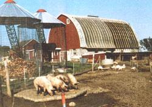
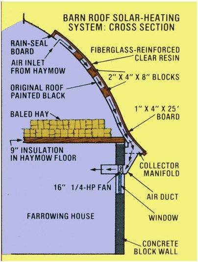
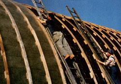
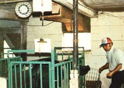
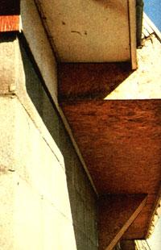

I suppose I should admit it right off: When John Feyen and I first decided to "go solar" with our jointly owned pig farrowing house, our motive was more financial than ecological. We simply wanted to trim the cost of heat for our sows and their babies ... and figured that-by using We sum's warmth-we could cut our fuel expenses.
Now that we're into our second season of solar heat, though, I can pronounce the project a rousing success. We have saved money! In fact, by the end of this winter, our installation will have paid for itself. But that's not all! As an added bonus, John and I have become totally hooked on solar energy as a safe, dry, ecologically sound heat source . . . and one that can be adapted to any number of uses.
Perhaps most important of all, though, what we did can be done by anyone who knows which end of the hammer meets the nail! All that's needed is a bit of planning, a commitment of time, and enough confidence to overcome the notion (which many solar-products companies have tried to foster) that "sun heat" has to be complicated and expensive. The operation at our two-family farm in southwest Wisconsin offers a simple, inexpensive rebuttal to that particular solar industry claim.
In the fall of 1977, our families invested about $550 and a few weeks' work in the construction of a solar collector ... which sits on the southfacing roof of our barn. The farrowing house is in the lower section of the building, so it was a simple matter to duct the collected hot air into the enclosure, rig up a fan controlled by thermostats in series, and let 'er rip!
She ripped very well. By the end of that first winter, our backup gas heater was not only shut off, but removed from the farrowing house altogether. (We'd spent $250 on liquid propane for that heat source during the previous year.) Now, the only conventional energy the farrowing house consumes is electricity to power a 1/4-horsepower fan (to pull the hot air from the solar collector) and another blower which removes the stale air from the building.
The U.S. Department of Energy was as impressed as we were with the initial results. In fact, that agency has since chipped in some man" to help us expand our system. As a result we're working to double We collector size, add heat stop age, and incorporate a sun-powered graindrying operation. In return for the grant, DOE wants to study the setup for five years and let other people take a look at it. That's fine with us, because we're proud of our accomplishment, and-as far as we know-it's the only such "solar system" in these parts.
ANYONE CAN BUILD IT!
Since one side of our barn faces due south-with no obstructions between it and the sun-the structure simply cried out far a solar collector. I suppose it was that lucky coincidence that first started us thinking about our alternative energy possibilities.
I should mention at this point that the dimensions and configurations of the collector and ductwork were the result of some fairly heavy homework on the engineering principles involved. We also brought in a consultant, Don Rode, who is employed as an agricultural engineer (and something of a solar expert) at the University of Illinois in Urbana.
After a lot of preliminary planning, we realized that we could use the top of the barn itself as a part of the collector, and eliminate the trouble (and expense) of building a separate hot air enclosure.
Our first step was to paint the roof's sunny side with a coat of asphalt driveway sealer. About $10 worth covered the 25-foot-high by 48-foot-long surface, and application of the flat black coat was made easy after we attached long handles to the paint rollers,
Once the asphalt had dried, we tackled the most time-consuming part of the job: building a framework that would support the collector covering and provide the necessary air-heating space.
We cut and installed 1- by 4-inch wood ribs ... which run vertically up the roof at two-foot intervals. These are raised from the asphalt-covered surface by 8-inch lengths of 2 X 4's ... placed-on edge under the 1 x 4's-every three feet. Our wood was rough-cut pine, and-thanks to the large woodlot on my father-in-law's place-our only lumber costs were for sawing and hauling the free timber.
Once We ribs were bent (to follow the curve of the roof) and nailed in place, we put on the covering. This "skin" was made from a fiberglass-reinforced clear resin that we ordered from Energy Conservation Von and Solar Center 121 Valley Street, Manchester , New Hampshire 03105). I'm sure there are other suppliers of similar products, but this covering suited our purposes, and the price-although it turned out to be our biggest capital outlayseemed right: $270 plus shipping for enough to cover half the roof (or about 600 square feet), which was the extent of our collector surface that was ready for the first winter The film is .0025 of an inch thick and comes in 50-foot rolls, 49-1/2 inches wide. (The extra 1-1/2-inch width gave us a 3/4-inch overlap on every second rib center.) We fastened the covering to all the ribs with neoprene-washered roofing nails and caulked the whole surface tight at its top and side edges.
That completed the collector part of the project. And, once back on solid ground, we haved a joint sigh of relief that everyone had survived hit or her strut on the treacherous ski slope of a roof.
MAKE-DO DUCTWORK
It was then time to turn our attention to building a manifold that would carry the heated air from the roof to the farrowing house. We used inexpensive pressed board for our ductwork and simply nailed and caulked the joints tight. The warmth was brought in through a window that had once housed one of two exhaust fans. We figured ducts about one foot square would be large enough to move the amount of air that our calculations had shown we'd be able to pull in from our rooftop heater at any given time.
The next step was to get a supply of fresh air into the collector. To do this, we went into the hay mow (the upper part of the barn) and sawed a series of 6- by 12-inch holes in the roof ... near its top but opening into the collector. Using air from inside the barn provided us with a double advantage: The outer surface of the collector stayed sealed and dry, and our system allowed us to reclaim any heat that rose from the farrowing house below.
Admittedly, that extra warmth was slight ... thanks to a lot of stored hay and nine inches of insulation that we'd put into the ceiling of the sow's quarters a year earlier. But, by this time we'd learned-as John stated in a rare poetic moment-that "solar energy is an efficiency game, and you have to play it all the way".
After the ductwork had been taken care at we dealt with the matter of how we'd pull the warmth down into the building. We realized that fan size was very important. (Obviously, the faster you move the air through a collector, the less temperature rise you'll get.)
With Engineer Rode's help, we learned that air movement at the rate of 5 to 10 feet per minute would be best. The formula for proper fan size is this: The fan's CFM rating should be 5 to 10 times the number of cubic feet that the collector occupies. In our case, we were talking about 200 cubic feet of collector (24 feet by 25 feet by 4 inches). Therefore, we installed a 1/4-horsepower, 16-inch-diameter fan rated at 1,760 CFM. That gave us an air movement of 8.8 feet per minute (1,760 divided by 200), (in later tests, we found that the single intake fan, placed below the middle of the collector, tended to evacuate the air from the center of the roof ... but it was unable to remove all the valuable warmth from the unit's corners. Slightly larger ducts should, we think, eliminate that problem.)
The final step was to rig two thermostats in series. The first-in the collector itself-turns on when the inside air temperature climbs to 75°F. The other, located in the farrowing house, is activated when the mercury down there drops to 55°F. The fan only runs when both switches are "on".
FACTS AND FIGURES
We calculated that the collector generates about 60,000 Btu's per hour. (One hundred Btu's per square foot of collector surface per hour is a safe bet for a good installation-on a clear day-in this climate.) For our particular farrowing operation-16 sows in a 1,500-square-foot area-we need a minimum of about 30,000 Btu's. The collector's extra capacity has allowed us to force additional warmth into the building ... the walls and floors of which act as primitive heat retention mediums. That storage, albeit inefficient, is still adequate to tide us over at night and on cloudy days.
Of course, sows and baby pigs give off body heat, and we use a heat lamp to help newborns through their first few days. But these sources alone are not sufficient during a cold Wisconsin winter. For us, solar heating has made the difference. The temperature in the building never drops below 45 deg F (the coldest that farrowing sows can tolerate) and on clear winter days-when our collector can operate from about 9:30 or 10:00 a.m. until 3:30 p.m.-the inside of the "furnace" can get up to 160°F!
Our collector also gets a nice boost from the metal roof of a low-lying hog shed that we'd built just south of the barn. Rode estimated that this ready-made reflector adds as much as 50% to the system's efficiency.
SOLAR PHASE II
We're now into "Solar Phase II", during which we'll double the collector size and add more efficient heat storage. The latter will involve some 300 feet of 4-inch perforated pipe set in a concrete floor, which will also serve as a step to help the sows climb into raised crates. The heat will be ducted into the buried pipes to provide better distribution and a more even supply of warmth during sunless days.
Our most important "new" project, however, the construction of a solar grain-drying operation. We've designed a junction for the ductwork so that-with another fan-we can pull the heated air down to an underground duct that will run to two grain storage bins about 50 feet away from the barn. Since we'll need a large volume of air for this operation, the new "passageway" will be made of 50-gallon drums buried end to end. (They'll also be strong enough not to collapse if we drive a tractor over them.) The air will be forced into the bottom of the bins-below a perforated false floor that will serve as a plenum-and then will rise through about 10 feet of she lled corn.
This low-temperature grain-drying operation should be ready in time for next fall's crop. We estimate that our corn will dry in three weeks ... a lot quicker than regular air drying, and the corn itself will be in better shape than if we were to use forced-air dehydration. (Not to mention that solar drying is a lot less expensive and more ecologically sound than the latter method.)
We'll "preserve" the corn in October. That way, by the time the cold weather arrives, the system can be switched back to keep the sows warm in the farrowing house.
WERE CONVINCED
As is obvious by now, the solar bug has bitten us hard. Another project, still on drawing board, is a solar-heated machine shed with heat ducted into pipes in the concrete floor. (That should take the chill out of working underneath the hay baler!)
What's more, my long-held dream of a solarheated home may soon become a reality. If our pigs can live in a cozy, sunheated pad, why can't we? After all, th ey're not that much better than we are!
|
 PHOTOS BY THE AUTHOR
|

|
 John Feyen and Sharon Murphy install support ribs for the second half of the collector. Note how the pig-raisin' people have cleverly - and economically - used the original roof of the barn as part of their collector! The lumber comes from trees cut on their own land, and the ductwork is made of inexpensive pressed board, so the biggest material expense was for the fiberglass resin skin (the film used in the first collector cost $270). |
||
|
 This interior view of the farrowing house shows one of the fan-controlling ther mostats (the second -series - linked-thermostat is inside the collector), the temperature gauge, and the outlet for the hot air duct. |
 The manifold is about one foot square (slightly larger ductwork might work even better) and carries the heated air into the barn through a farrowing house window that at one time held an exhaust fan. |
|